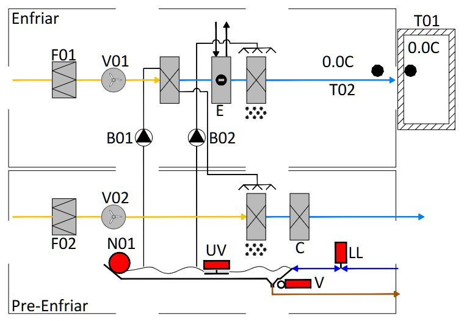
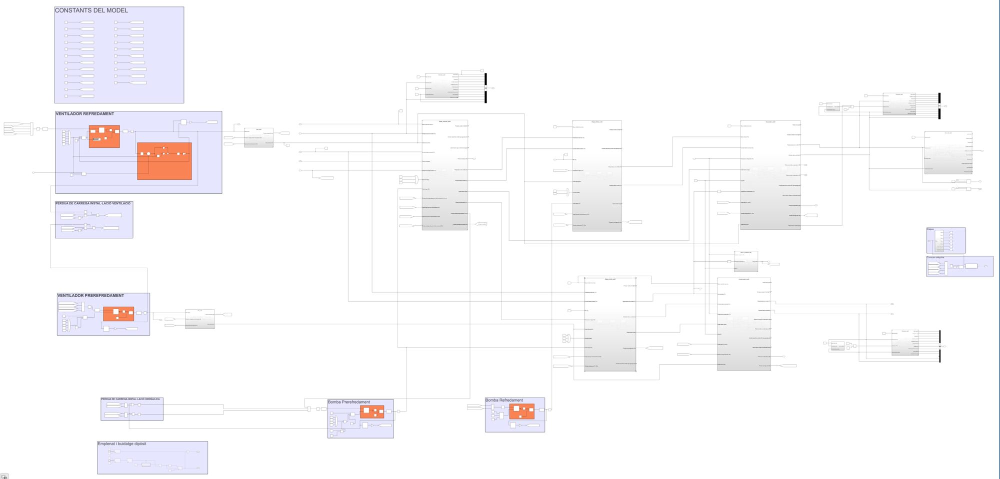
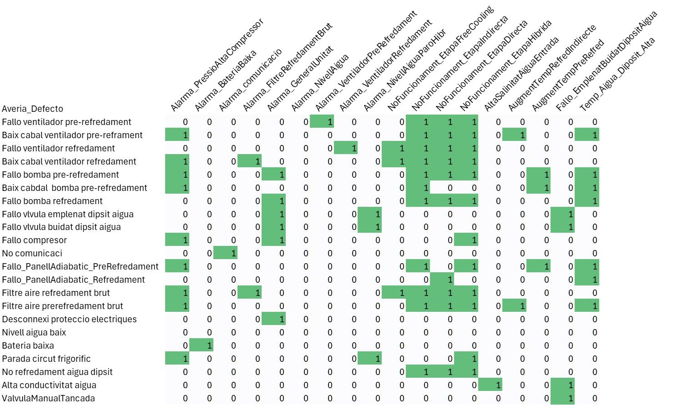
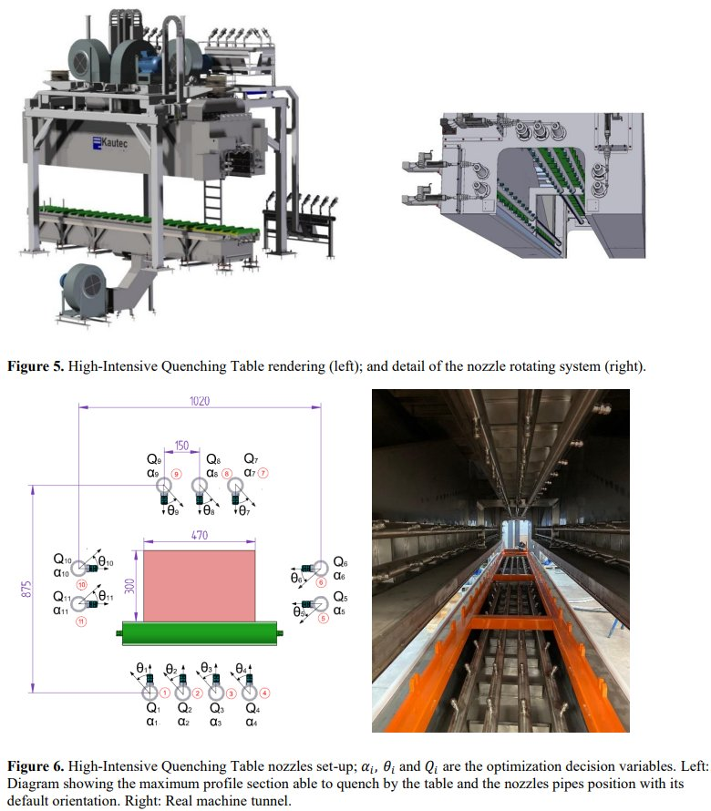
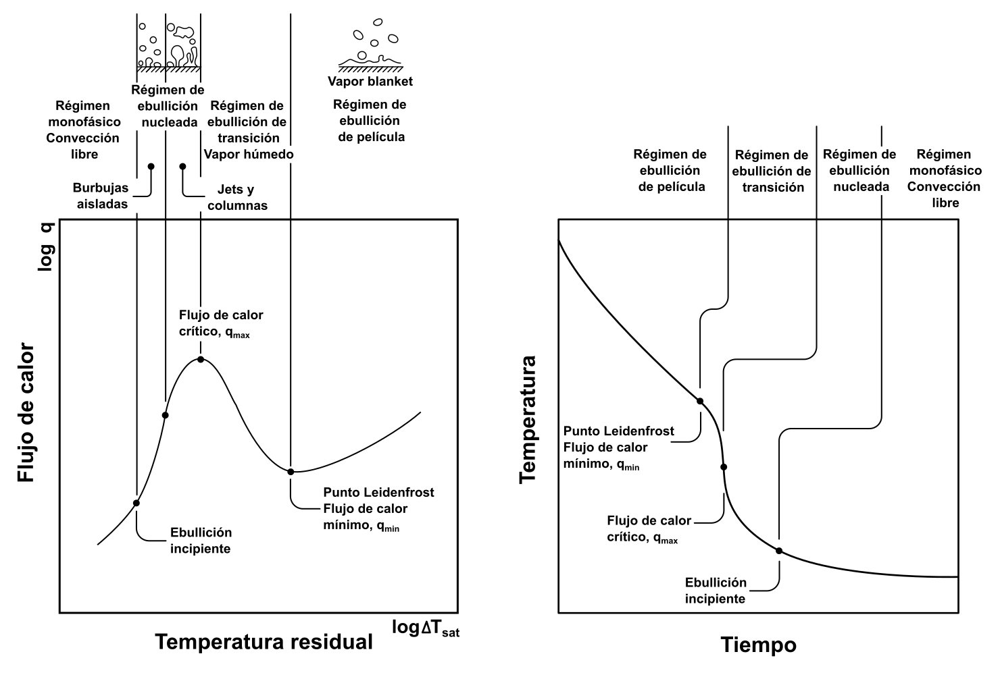
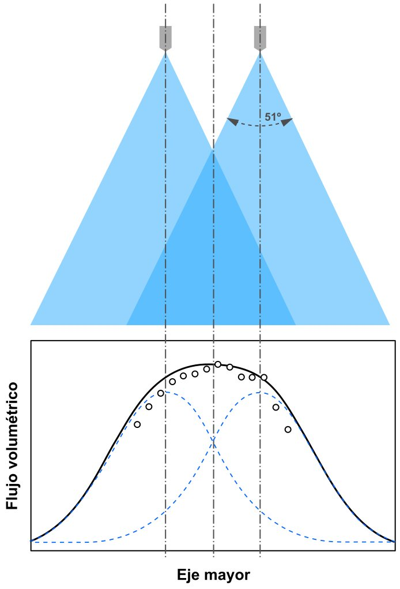
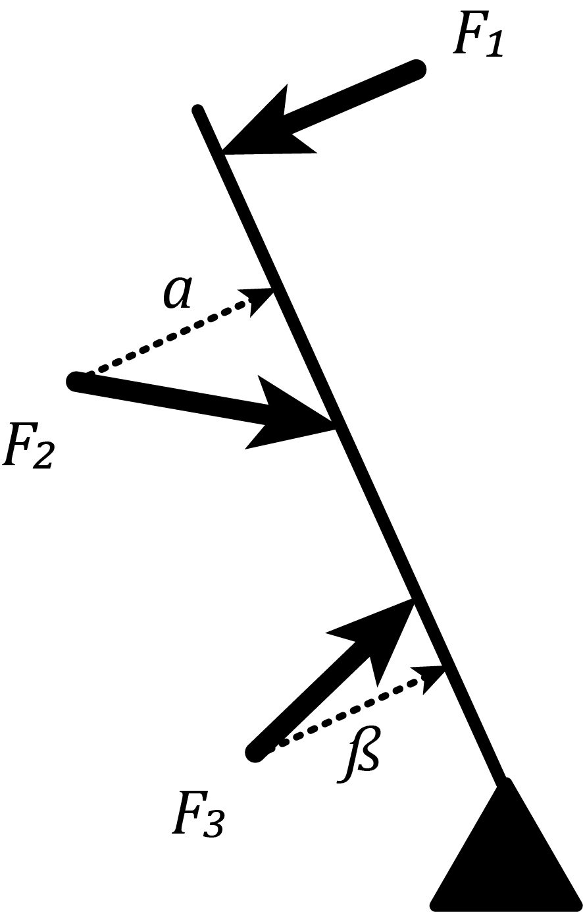
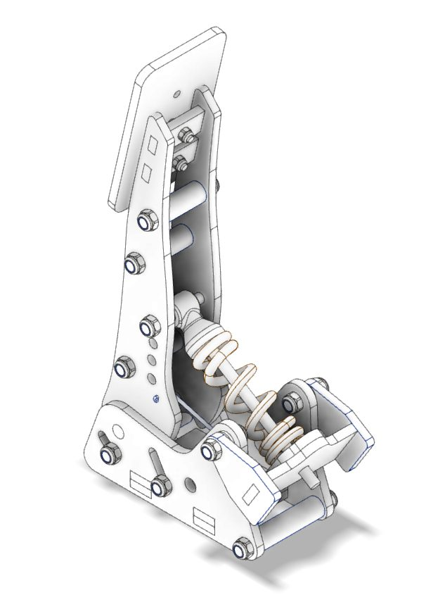
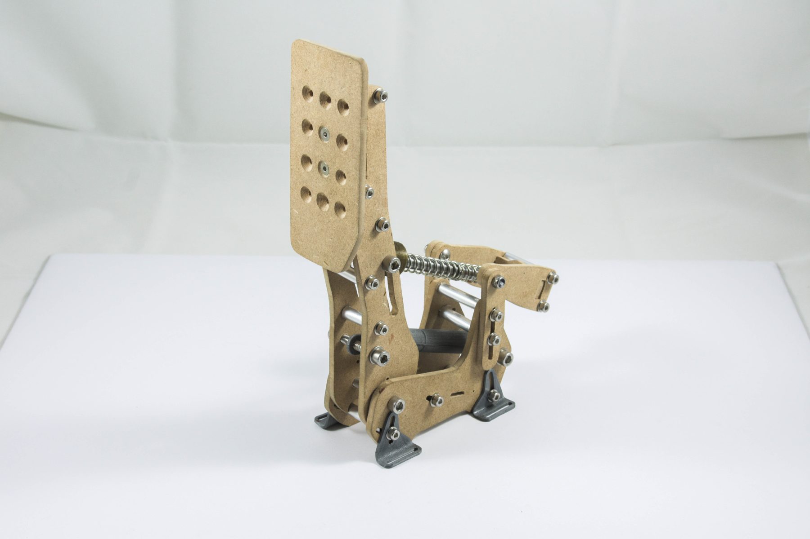
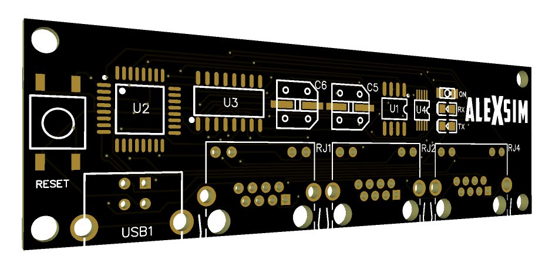

I model physical systems and turn them into useful tools: from digital twins that diagnose faults in HVAC units to thermal simulators powered by machine learning, and machines I design and build myself.
I'm an industrial engineer from the University of Girona. I work where thermodynamics, simulation and data meet. For my Master's thesis, which won the Best MEI Master's Thesis Award from Enginyers Industrials de Catalunya, I developed a fault detection and diagnosis system for a fleet of 84 HVAC units. For my Bachelor's thesis I built a finite-element thermal simulator coupled with a genetic algorithm to optimise aluminium quenching.
I also like turning ideas into physical things. In high school I designed and built a CNC laser cutter and used it to prototype the pedals of a racing simulator, complete with its electronics, business plan and advertising campaign.
Education
MSc in Industrial Engineering · University of Girona · 2026
BSc in Industrial Technology Engineering · University of Girona · 2024
First employee of the digital twin department. Built the business line from scratch and delivered the FDD project for TAVIL, whose success turned Proisotec Digital Twin into an independent company.
Developed the FEM heat-transfer simulator for aluminium quenching that became Kautec's GOTA software.
Projects

2026 · MSc in Industrial Engineering · University of Girona
FDD system for HVAC units
Design and implementation of a fault detection and diagnosis (FDD) system for the 84 hybrid adiabatic HVAC units at the TAVIL plant, developed with PROISOTEC GRUP Digital Twin. A Simulink digital twin computes the expected nominal behaviour, and a MATLAB inference engine based on a fault signature matrix identifies the root cause of each deviation.
2024 · BSc in Industrial Technology Engineering · University of Girona
Finite elements and machine learning applied to aluminium quenching
A fast finite-element thermal simulator (TermoPixel) and a genetic algorithm that automatically find the nozzle configuration that quenches extruded aluminium profiles quickly and evenly, using less water. Developed for Kautec Solutions; it became the basis of their GOTA software.
34× faster than Ansys (36 s vs. about 20 min) with a maximum error of 3.8%. In a real case, the optimised setup cooled the profile more symmetrically and cut coolant flow by 24.7% (150 → 113 l/min). Presented at the 30th Premis Patronat Politècnica.
2019 · High-school research project (Treball de Recerca)
AlexSim: from an idea to a company
My high-school research project: taking the idea of a sim-racing pedal set from a sketch to a small company. Market analysis, mechanical design checked with calculations, electronics, a laser cutter built by myself, prototype, website and launch campaign.
Entered in the 2020 Blanes Research Project Competition (Concurs de Treballs de Recerca).
A laser cutting and engraving machine designed from scratch: 3D modelling of the axis carriages and blocks, 3D-printed parts, assembly of the control electronics and tuning. I then used it as a manufacturing tool for the AlexSim prototypes.
CAD 3D3D printingCNCElectronics
Skills
CAD / CAM
SolidWorks
Fusion 360
Inventor
AutoCAD
Solid Edge
Diamonds
PTC Creo
CNC (ISO)
Simulation
MATLAB
Simulink
Simscape
Ansys
OpenFOAM
Festo FluidSim
Programming
Python
Julia
C#
MySQL
Arduino
Git
VS Code
Industrial systems
SCADA
BMS
Siemens APIs
vNode
LaTeX
Contact
Let's talk
I'm open to new opportunities and collaborations. Drop me a line and I'll get back to you as soon as I can.
A digital-twin-based system that detects and diagnoses faults in industrial HVAC units, including the silent degradation that control loops hide until it becomes a breakdown or a waste of energy.
Role
Sole developer
Partners
PROISOTEC GRUP Digital Twin · TAVIL
Tutor
Joan Colomer Llinàs · University of Girona
Tools
MATLAB · Simulink · Python
Recognition
🏆 Best MEI Master's Thesis
🔒 Confidential work carried out for a company, so only a small part of the project is shown.
Context
The TAVIL plant is cooled by 84 hybrid adiabatic HVAC units. When their performance drops gradually, the PID controllers compensate for it and no alarm goes off. Neither reactive maintenance nor scheduled preventive maintenance catches this silent degradation in time, so it shows up later as a breakdown or as extra energy consumption.
My role
I designed and implemented the whole system: the thermodynamic model of the unit, the Simulink digital twin, the data pipeline, the diagnosis engine, the daily reports and the validation with real plant data. I also wrote the feasibility study and budget.
Approach
The core is a Simulink digital twin that reproduces the nominal, fault-free behaviour of the unit. From the real outdoor conditions it generates a reference profile, which is compared with what the plant sensors measure. A four-stage state machine (free cooling, indirect, direct and hybrid) lets the system interpret each deviation in the right operating mode.
The diagnosis algorithm combines the relative error between measured and simulated values with expert know-how, encoded in a fault signature matrix that links each pattern of deviating variables to its possible root causes. It replaces the manual interpretation a technician makes when facing an unknown fault, and it runs continuously, so it also catches problems that are not yet catastrophic. The matrix is a plain file, so it can be updated without touching the code.
Around the model there is a decoupled pipeline that downloads the plant data through the Siemens Horizon API, cleans it, runs the simulation, detects deviations, diagnoses causes and generates the daily reports for all 84 units.

Digital twin of the unit in Simulink

Fault signature matrix
Daily FDD report: probability of each fault, temperatures and operating stage
Results
84HVAC units covered
3/3controlled faults correctly diagnosed
🏆Best MEI Master's Thesis Award
The system was validated with faults deliberately induced on real units of the pilot plant during three summer days: a full cut of the water supply to the evaporative panels, a 50% restriction of the water flow to one pump, and a shutdown of the compressor. In all three cases the algorithm identified the right subsystem, the time window and the relative severity of the fault, with no thermodynamically wrong diagnosis. It told the full panel failure from the partial one, and it also separated a water-circuit fault from a compression-circuit one.
Three cases do not prove the method in general, and the thesis says so: the next steps are testing the remaining faults of the catalogue, reducing false alarms at stage changes with an adaptive guard time, and recalibrating the model for extreme outdoor temperatures. The architecture is also prepared for new data sources and for other facilities, such as hospital ICUs, and the labelled fault history opens the door to machine-learning classifiers and remaining-useful-life models.
A fast thermal simulator and a genetic algorithm that find the best nozzle configuration to quench extruded aluminium profiles.
Role
R&D intern
Company
Kautec Solutions
Tutors
Albert Massaguer · Carolina Madeira (University of Girona)
Tools
MATLAB · Ansys
Outcome
GOTA software
🔒 Confidential work carried out for a company, so only a small part of the project is shown.
Context
After extrusion, aluminium profiles have to be cooled quickly and evenly. Uneven cooling creates an asymmetric temperature gradient that twists the profile, which can crash into the quenching machine and cause damage and costly stoppages. Kautec's machines use adjustable high-pressure nozzles that can reach cooling rates of about 100 °C/s, but they were set up by hand: the operator starts with the maximum flow and corrects by eye, wasting material and time.

Kautec nozzle quenching table
My role
I developed TermoPixel, a finite-element heat-transfer simulator, and the machine learning optimiser built on top of it, and validated both against Ansys.
Approach
TermoPixel works on a structured mesh, so it keeps only the essential physics: conduction inside the profile, the heat extraction of each nozzle, the overlap of neighbouring spray cones, and the Leidenfrost effect, which changes the convection coefficient with the surface temperature. Vectorisation and algorithm optimisation make it fast enough to be run thousands of times.
A genetic algorithm then uses the simulator to search the flow and orientation of every nozzle. Its objective function rewards a fast and symmetric cooling and penalises water consumption.

Boiling curve and Leidenfrost effect

Spray cone overlap and volumetric flux
Simulation of the temperature gradient across the profile
Results
34×faster than Ansys
3.8%maximum error
−24.7%water flow in the real case
Against Ansys, TermoPixel runs a reference case in 36 s instead of about 20 min, with a maximum relative error of 3.81% (2 mm mesh) and 4.62% (5 mm mesh), and it is robust to changes in the time step. The optimiser finds good configurations in 2.5 to 10 minutes.
In a real case with 15 nozzles on a 100×100 square tube, the optimised configuration gave a more symmetric temperature distribution than the standard setting (all nozzles straight, maximum flow), so less deformation is expected. It also cut the coolant flow from 150 to 113 l/min, which also lowers the pump energy consumption.
The tool became Kautec's GOTA software, featured in ALUMINIUM journal ↗. The project was presented at the 30th Premis Patronat Politècnica.
From a sketch to a small company: designing, building and selling sim-racing pedals.
Role
Everything, end to end
Products
Pedals · handbrake · shifter
Tools
CAD · Arduino · laser cutter
Context
INS Serrallarga, Blanes · 2nd Batxillerat
Recognition
Blanes Research Competition 2020
Context
I wanted a rally simulator, but a good one costs around €3,000, and the premium pedal sets of the market go from €2,400 to €3,300 for a full pack. I decided to design my own set and, halfway through, realised the work could become a company for sim-racing enthusiasts. The project documents the whole path: how to analyse the market, design, test, build, finance and sell a product.
My role
I did the whole project: market analysis and business plan, mechanical design and calculations, electronics and firmware, building the tools and prototype, the brand, the website and the social-media campaign.
Approach
Market. I compared Logitech, Thrustmaster, Fanatec and Heusinkveld by price, quality and target customer, and found the gap: high-end features (pressure sensors, Hall-effect position sensing, adjustable response) at an affordable price, produced on demand to avoid a large initial investment.
Design. A real pedal does not behave like a simple spring. I analysed the forces on the lever to size an elastomer-based mechanism with adjustable travel, stiffness and height, so the same pedal can act as accelerator, brake or clutch. The position is read with a Hall-effect sensor and a magnet, and the pressure with load cells, both through 12-bit analogue inputs.
Electronics and prototype. The electronics and firmware run on Arduino. To make the parts I assembled and improved a 3D printer (my mods were printed by 1,800 people through Thingiverse) and then built a 15 W laser cutter with it.

Force diagram on the pedal lever

CAD design of the pedal

Laser-cut prototype

PCB design
Company. I defined a minimalist brand (AlexSim, black, white and orange), built the website, set up an Excel tool that turns an order into a list of parts to buy, with cost and profit, and designed a social-media and influencer campaign. To finance the first batch I created two small side businesses, LED lights for electric scooters and design keyrings.
Results
I built a working prototype that behaves as the calculations predicted: robust and compact, even though I made it with 5 mm panels instead of the 2.5 mm of the original design. The laser cutter turned out very precise but too slow to cut thick wood, so I cut the final prototype by hand, while it works well for engraving. I also finished the website and the campaign material. The crowdfunding campaign was prepared but not completed, so the company was left ready to start financing rather than launched.
The project was entered in the 2020 Blanes Research Project Competition. Beyond the product, it taught me what it takes to start a company from scratch: a lot of effort, and the need to be passionate about what you are getting into.